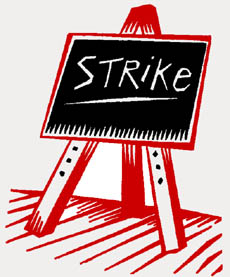

All workers in educational institutions.
Submitted on Mon, 03/17/2008 - 12:38am
Bay Area IWW members are involved in the following struggle:

On Monday, March 17, at 8:30 a.m. a strike will begin at San Francisco
Institute of English (3301 Balboa, corner of 34th Avenue in SF's Outer
Richmond District) and will continue until the following demands are
met:
- Return of fully-paid health care that was removed in
2004 with the promise of its return when financial conditions improve,
which they have -- in addition, this past week SFIE sold another school
property that had been on the market for $1,395,000.
- An
across-the-board 30% increase in wages, with automatic future
cost-of-living-adjustments because there have been none for over 12
years.
Please join our picket line in front of the school
building, as well as contribute to our strike fund (e-mail back for
details).
Submitted on Thu, 01/31/2008 - 5:55pm
This week will mean a return to campus for thousands of University of New Mexico students beginning their spring semester. Meanwhile, two former UNM employees will come back to UNM not to resume the jobs they loved, but to protest their recent terminations. They will gather with community allies, coworkers, and members of the IWW at the new George Pearl Hall located on the corner of Cornell and Central. There they will speak out about the lack of respect that UNM management has for university employees and what happens when workers speak up about health and safety issues.
RETIRE OR BE FIRED
Mike Swick had worked for UNM for 19 years when he was forced into early retirement. Mike is a former library facilities coordinator as well as a cofounder of the United Staff UNM union.
Submitted on Tue, 01/01/2008 - 2:50pm
By John J. Cronan Jr - originally published on ZNet, December 26, 2007
Submitted on Fri, 12/28/2007 - 10:36pm
The following is posted in solidarity; at least one member of the Bay Area IWW has been targetted by this dragnet.
Don't believe everything you read, free speech is once again an issue
in Berkeley.
Though it might not have started as such, the struggle to save the
Oak grove at Memorial Stadium has become a fight for free speech, tapping
into our activist legacy: the Free Speech Movement.
The Oaks Protest became a fight for free speech when the fence was
built around a peaceful protest and those participating were given the
options of either coming down, and being arrested, or starving.
Submitted on Fri, 10/26/2007 - 4:55pm
Current Classes
Updated October 2007 
Chomsky 101: An Introduction to Noam Chomsky's Life and Political Thought.
FW Facilitator Stephen Holm
This 6-part class will introduce participants to the thinking and writing of one of America’s preeminent dissidents- the MIT Linguistics professor, Wobbly, and anarchist Noam Chomsky.
Themes covered will include Media and Propaganda; U.S imperialism around the world; and the anarchist alternative. There will be short readings and group discussion.
Chomsky 101 meets Saturdays
November 17th - December 22nd 2007 11:00 am - 1:00 pm
Downtown Minneapolis Public Library
4th Floor, Conference Room N-402